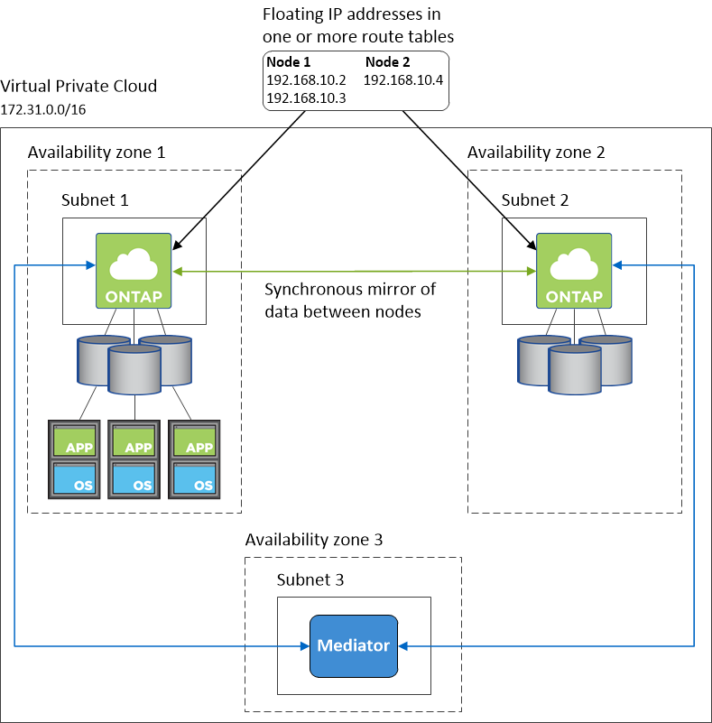
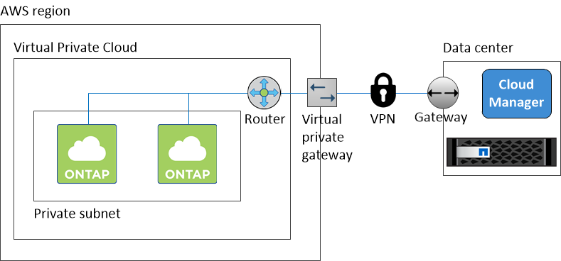

Richiedi modifiche alla documentazione
Richiedi modifiche alla documentazione Modifica questa pagina
Modifica questa pagina Scopri come collaborare
Scopri come collaborareVai alla documentazione per la versione più recente.
Requisiti di rete per Cloud Volumes ONTAP in AWS
Collaboratori
Configurare la rete AWS in modo che i sistemi Cloud Volumes ONTAP possano funzionare correttamente.
Requisiti generali di rete AWS per Cloud Volumes ONTAP
I seguenti requisiti devono essere soddisfatti in AWS.
- Accesso a Internet in uscita per nodi Cloud Volumes ONTAP
-
I nodi Cloud Volumes ONTAP richiedono l’accesso a Internet in uscita per inviare messaggi a NetApp AutoSupport, che monitora in modo proattivo lo stato di salute dello storage.
I criteri di routing e firewall devono consentire il traffico HTTP/HTTPS di AWS ai seguenti endpoint in modo che Cloud Volumes ONTAP possa inviare messaggi AutoSupport:
-
https://support.netapp.com/asupprod/post/1.0/postAsup
Se si dispone di un’istanza NAT, è necessario definire una regola del gruppo di sicurezza in entrata che consenta il traffico HTTPS dalla subnet privata a Internet.
- Accesso a Internet in uscita per il mediatore ha
-
L’istanza di ha mediator deve disporre di una connessione in uscita al servizio AWS EC2 in modo che possa fornire assistenza per il failover dello storage. Per fornire la connessione, è possibile aggiungere un indirizzo IP pubblico, specificare un server proxy o utilizzare un’opzione manuale.
L’opzione manuale può essere un gateway NAT o un endpoint VPC di interfaccia dalla subnet di destinazione al servizio AWS EC2. Per ulteriori informazioni sugli endpoint VPC, fare riferimento a. "Documentazione AWS: Endpoint VPC di interfaccia (AWS PrivateLink)".
- Numero di indirizzi IP
-
Cloud Manager assegna il seguente numero di indirizzi IP a Cloud Volumes ONTAP in AWS:
-
Nodo singolo: 6 indirizzi IP
-
Coppie HA in un singolo AZS: 15 indirizzi
-
Coppie HA in più AZS: 15 o 16 indirizzi IP
Si noti che Cloud Manager crea una LIF di gestione SVM su sistemi a nodo singolo, ma non su coppie ha in un singolo AZ. È possibile scegliere se creare una LIF di gestione SVM su coppie ha in più AZS.

LIF è un indirizzo IP associato a una porta fisica. Per strumenti di gestione come SnapCenter è necessaria una LIF di gestione SVM.
-
- Gruppi di sicurezza
-
Non è necessario creare gruppi di sicurezza perché Cloud Manager fa questo per te. Se è necessario utilizzare il proprio, fare riferimento a. "Regole del gruppo di sicurezza".
- Connessione da Cloud Volumes ONTAP ad AWS S3 per il tiering dei dati
-
Se si desidera utilizzare EBS come Tier di performance e AWS S3 come Tier di capacità, è necessario assicurarsi che Cloud Volumes ONTAP disponga di una connessione a S3. Il modo migliore per fornire tale connessione consiste nella creazione di un endpoint VPC per il servizio S3. Per istruzioni, vedere "Documentazione AWS: Creazione di un endpoint gateway".
Quando si crea l’endpoint VPC, assicurarsi di selezionare la regione, il VPC e la tabella di routing che corrispondono all’istanza di Cloud Volumes ONTAP. È inoltre necessario modificare il gruppo di protezione per aggiungere una regola HTTPS in uscita che abilita il traffico all’endpoint S3. In caso contrario, Cloud Volumes ONTAP non può connettersi al servizio S3.
- Connessioni a sistemi ONTAP in altre reti
-
Per replicare i dati tra un sistema Cloud Volumes ONTAP in AWS e i sistemi ONTAP in altre reti, è necessario disporre di una connessione VPN tra AWS VPC e l’altra rete, ad esempio Azure VNET o la rete aziendale. Per istruzioni, vedere "Documentazione AWS: Configurazione di una connessione VPN AWS".
- DNS e Active Directory per CIFS
-
Se si desidera eseguire il provisioning dello storage CIFS, è necessario configurare DNS e Active Directory in AWS o estendere la configurazione on-premise ad AWS.
Il server DNS deve fornire servizi di risoluzione dei nomi per l’ambiente Active Directory. È possibile configurare i set di opzioni DHCP in modo che utilizzino il server DNS EC2 predefinito, che non deve essere il server DNS utilizzato dall’ambiente Active Directory.
Per istruzioni, fare riferimento a. "Documentazione AWS: Active Directory Domain Services su AWS Cloud: Implementazione di riferimento rapido".
Requisiti di rete AWS per Cloud Volumes ONTAP ha in più AZS
Ulteriori requisiti di rete AWS si applicano alle configurazioni Cloud Volumes ONTAP ha che utilizzano zone di disponibilità multiple (AZS). Prima di avviare una coppia ha, è necessario esaminare questi requisiti perché è necessario inserire i dettagli di rete in Cloud Manager.
Per informazioni sul funzionamento delle coppie ha, vedere "Coppie ad alta disponibilità".
- Zone di disponibilità
-
Questo modello di implementazione ha utilizza più AZS per garantire un’elevata disponibilità dei dati. È necessario utilizzare un AZ dedicato per ogni istanza di Cloud Volumes ONTAP e per l’istanza del mediatore, che fornisce un canale di comunicazione tra la coppia ha.
- Indirizzi IP mobili per dati NAS e gestione cluster/SVM
-
Le configurazioni HA in più AZS utilizzano indirizzi IP mobili che migrano tra nodi in caso di guasti. Non sono accessibili in modo nativo dall’esterno del VPC, a meno che non si "Configurare un gateway di transito AWS".
Un indirizzo IP mobile è per la gestione del cluster, uno per i dati NFS/CIFS sul nodo 1 e uno per i dati NFS/CIFS sul nodo 2. Un quarto indirizzo IP mobile per la gestione SVM è opzionale.

Se si utilizza SnapDrive per Windows o SnapCenter con la coppia ha, è necessario un indirizzo IP mobile per la LIF di gestione SVM. Se non si specifica l’indirizzo IP durante l’implementazione del sistema, è possibile creare la LIF in un secondo momento. Per ulteriori informazioni, vedere "Configurazione di Cloud Volumes ONTAP". Quando si crea un ambiente di lavoro Cloud Volumes ONTAP ha, è necessario inserire gli indirizzi IP mobili in Cloud Manager. Cloud Manager assegna gli indirizzi IP alla coppia ha quando avvia il sistema.
Gli indirizzi IP mobili devono essere al di fuori dei blocchi CIDR per tutti i VPC nella regione AWS in cui si implementa la configurazione ha. Gli indirizzi IP mobili sono una subnet logica esterna ai VPC della propria regione.
Nell’esempio seguente viene illustrata la relazione tra gli indirizzi IP mobili e i VPC in una regione AWS. Mentre gli indirizzi IP mobili si trovano al di fuori dei blocchi CIDR per tutti i VPC, sono instradabili alle subnet attraverso le tabelle di routing.

Cloud Manager crea automaticamente indirizzi IP statici per l’accesso iSCSI e NAS da client esterni al VPC. Non è necessario soddisfare alcun requisito per questi tipi di indirizzi IP. - Gateway di transito per abilitare l’accesso IP mobile dall’esterno del VPC
-
"Configurare un gateway di transito AWS" Per consentire l’accesso agli indirizzi IP mobili di una coppia ha dall’esterno del VPC in cui risiede la coppia ha.
- Tabelle di percorso
-
Dopo aver specificato gli indirizzi IP mobili in Cloud Manager, è necessario selezionare le tabelle di routing che devono includere i percorsi verso gli indirizzi IP mobili. In questo modo si abilita l’accesso del client alla coppia ha.
Se si dispone di una sola tabella di routing per le subnet nel VPC (la tabella di routing principale), Cloud Manager aggiunge automaticamente gli indirizzi IP mobili alla tabella di routing. Se si dispone di più tabelle di routing, è molto importante selezionare le tabelle di routing corrette quando si avvia la coppia ha. In caso contrario, alcuni client potrebbero non avere accesso a Cloud Volumes ONTAP.
Ad esempio, potrebbero essere presenti due subnet associate a diverse tabelle di routing. Se si seleziona la tabella di route A, ma non la tabella di route B, i client nella subnet associata alla tabella di route A possono accedere alla coppia ha, ma i client nella subnet associata alla tabella di route B.
Per ulteriori informazioni sulle tabelle di percorso, fare riferimento a. "Documentazione AWS: Tabelle di percorso".
- Connessione ai tool di gestione NetApp
-
Per utilizzare gli strumenti di gestione NetApp con configurazioni ha che si trovano in più AZS, sono disponibili due opzioni di connessione:
-
Implementare gli strumenti di gestione NetApp in un VPC diverso e. "Configurare un gateway di transito AWS". Il gateway consente l’accesso all’indirizzo IP mobile per l’interfaccia di gestione del cluster dall’esterno del VPC.
-
Implementare gli strumenti di gestione NetApp nello stesso VPC con una configurazione di routing simile a quella dei client NAS.
-
Configurazione di esempio
La seguente immagine mostra una configurazione ha ottimale in AWS che opera come configurazione Active-passive:

Configurazioni VPC di esempio
Per comprendere meglio come implementare Cloud Manager e Cloud Volumes ONTAP in AWS, è necessario esaminare le configurazioni VPC più comuni.
-
Un VPC con subnet pubbliche e private e un dispositivo NAT
-
Un VPC con una subnet privata e una connessione VPN alla rete
Un VPC con subnet pubbliche e private e un dispositivo NAT
Questa configurazione VPC include subnet pubbliche e private, un gateway Internet che connette il VPC a Internet e un gateway NAT o istanza NAT nella subnet pubblica che abilita il traffico Internet in uscita dalla subnet privata. In questa configurazione, è possibile eseguire Cloud Manager in una subnet pubblica o in una subnet privata, ma la subnet pubblica è consigliata perché consente l’accesso da host esterni al VPC. È quindi possibile avviare le istanze di Cloud Volumes ONTAP nella subnet privata.
|
|
Invece di un dispositivo NAT, è possibile utilizzare un proxy HTTP per fornire la connettività Internet. |
Per ulteriori informazioni su questo scenario, fare riferimento a. "Documentazione AWS: Scenario 2: VPC con subnet pubbliche e private (NAT)".
La seguente figura mostra Cloud Manager in esecuzione in una subnet pubblica e in sistemi a nodo singolo in esecuzione in una subnet privata:

Un VPC con una subnet privata e una connessione VPN alla rete
Questa configurazione VPC è una configurazione di cloud ibrido in cui Cloud Volumes ONTAP diventa un’estensione del tuo ambiente privato. La configurazione include una subnet privata e un gateway privato virtuale con una connessione VPN alla rete. Il routing attraverso il tunnel VPN consente alle istanze EC2 di accedere a Internet attraverso la rete e i firewall. È possibile eseguire Cloud Manager nella subnet privata o nel data center. Quindi, avviare Cloud Volumes ONTAP nella subnet privata.
|
|
In questa configurazione è anche possibile utilizzare un server proxy per consentire l’accesso a Internet. Il server proxy può trovarsi nel data center o in AWS. |
Se si desidera replicare i dati tra i sistemi FAS nel data center e i sistemi Cloud Volumes ONTAP in AWS, è necessario utilizzare una connessione VPN in modo che il collegamento sia sicuro.
Per ulteriori informazioni su questo scenario, fare riferimento a. "Documentazione AWS: Scenario 4: Solo VPC con subnet privata e accesso VPN gestito da AWS".
La seguente figura mostra Cloud Manager in esecuzione nel data center e nei sistemi a nodo singolo in esecuzione in una subnet privata:
